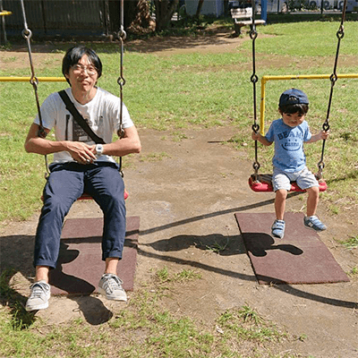

ABOUT自己紹介

東京都練馬区在住の1児の父です。
父親のパソコンで遊んでいたことがきっかけでホームページを自分でつくってみたいと思うようになり、専門学校で学びました。授業で初めて書いたHTMLが画面に表示された時の興奮と感動は今でも覚えています。
【 職務要約 】
自社サービスの制作・運用を中心に、ロゴ・バナー・LP制作、SEO対策やアクセス解析、UI設計、キャラクターデザイン、印刷物の作成まで幅広く担当し､19年間にわたり、企画から運用改善まで一貫して対応。成果につながるデザインを心がけ、改善志向を強みにサービスの成長を支えてきました。
DESIGNデザイン
WEBサイト、ランディングページ、バナーなど、UIと情報設計を意識したデザイン制作が可能です。コンセプトに沿って視認性・可読性・操作性をバランスよく整え、ビジュアルと使いやすさの両立を意識しています。細部にまで配慮した、シンプルかつ機能的なデザインを得意としています。
使用ツール：Photoshop / Illustrator / Adobe XD
CODINGコーディング
HTML・CSSを用いた静的コーディングを中心に、セマンティックな構造を意識したマークアップや、共通化・再利用性を考慮した設計が可能です。アニメーションや視覚効果も適切に取り入れ、ユーザー体験を損なわずに印象的な表現へと仕上げます。
使用ツール：HTML / CSS / jQuery / Visual Studio Code
STRENGTH 1魅せるだけでなく、伝えるデザイン
単に美しく見せるだけではなく、目的や意図を視覚的に整理し、伝わりやすい構成を心がけています。視線の流れ・色のコントラスト・余白などを丁寧に調整することで、ユーザーがストレスなく情報を理解し、目的のアクションに自然と進めるデザインを実現しています。
STRENGTH 2思考を重ねて効率的に形にする
構想段階から情報を整理し、方向性の共有・画面設計・デザイン制作を一貫して進行できます。これにより、修正や調整にも柔軟に対応しやすく、チーム全体の作業効率の向上にも貢献しています。個人で担当する案件でも、スピードとクオリティを両立した制作が可能です。
STRENGTH 3品質向上のための継続的な改善
アクセス解析やユーザー行動の把握を通じて、ボトルネックとなる箇所の特定と改善を継続的に行ってきました。目立たない地道な改善が、長期的な信頼や継続利用につながると考え、サイト全体の品質底上げを意識して取り組んでいます。
WORKS制作実績
※担当した案件の一部です。なお、多くはサービス終了から時間が経過しており、当時のスクリーンショット等の十分な資料が手元にない状況です。ご理解いただけますと幸いです。
デジタルコンテンツの統合プラットフォーム
レジまぐ
レジまぐのクラウドファンディングプラットフォーム
MEDIA（メディア）
フラッシュマーケティング型のクーポンサイト
PREPON（プレポン）
厳選宿の限定プランをお得なプライスで！
テレビ東京｢厳選いい宿｣ タイアップ企画
そのままポストに投函できる切手付き年賀はがき
tipoca（ティポカ）
様々なブログで共通して使える足跡システム
あし＠（あしあっと）
求人情報と転職支援の2つのサービスをワンストップで提供
求人バンク
コーポレートサイトのリニューアル
メディアインデックス株式会社
コインを貯めてお小遣い稼ぎポイ活サイト
Mコイン
スマートフォンで遊べるカジュアルゲーム
FLYING DONKEY ほか
ユーザー属性を絞ってメール配信
ターゲティングメール
ソーシャルゲームプラットフォーム｢GREE｣で配信
ロストエレメント 〜選ばれし魔導師たち〜
ポートフォリオをご覧くださり、ありがとうございます。
私はデザイナーとして、人に伝わるものをつくることを重視しています。
デザインは単なるビジュアルの美しさだけでなく、メッセージやブランド、サービスの価値を的確に伝えるための手段だと考えています。見る人が直感的に理解でき、感動を覚えるようなデザインを提供するために、色使いやレイアウト、コンテンツの配置など細部までこだわります。
このようなアプローチによって、見る人に強い印象を与え、サービスの認知度向上に貢献します。いちデザイナーとしてではなく、サービスの価値を提供し続けるパートナーとしてオンリーワンのサービスを目指し尽力します。どうぞ、よろしくお願いいたします。